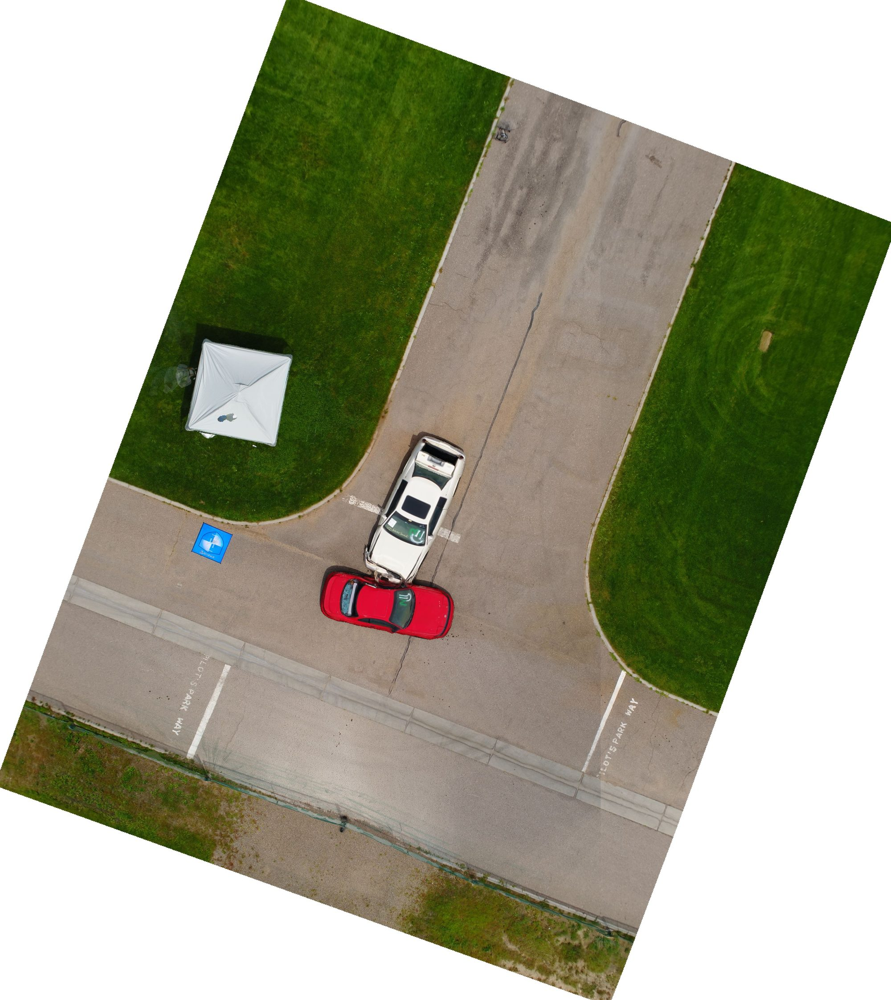

Crash Scene Reconstruction
CRASH-2026-04 · Delivered

Overview
Captured a controlled crash scene and processed 69 nadir images in PIX4Dmatic. Output included a 0.033 ft/px orthomosaic, dense point cloud, and DSM in NAD 1983 State Plane New Mexico Central. The deliverable supports measurable scene reconstruction without contaminating evidence on the ground.
Flight
AircraftDJI Phantom 4 Pro
SensorFC6310, 1" CMOS
Altitude AGLlow altitude
Forward Overlap80%
Side Overlap70%
Images69
% Calibrated100%
Processing
SoftwarePIX4Dmatic v2.0.2
Avg GSD0.033 ft/px
Dense Points5,054,372
Median Keypoint Matches2,555
Geoloc RMS Z1.146 ft
Coordinate Reference Systems
- Horizontal
- NAD83 CORS96 / NM Central FIPS 3002 (ESRI:103490)
- Vertical
- Project units in US Survey Feet
- Image
- WGS84 + EGM96
Methods
- Nadir grid mission at low altitude for evidence-grade GSD
- 100% camera calibration (69 of 69 images aligned)
- Standard PIX4Dmatic pipeline with hardware-accelerated densification
- Output in NAD 1983 State Plane NM Central
Deliverables
- Orthomosaic (0.033 ft/px GeoTIFF)
- Dense Point Cloud (5.05M points)
- DSM
- Mesh model
Key Technical Challenge
Capturing distortion-free imagery at low altitude to preserve evidence-grade GSD while still achieving 5+ image overlap across the full scene.
Lessons Learned
Lower-altitude oblique passes around the primary impact zone would have improved 3D fidelity on vehicle damage. Plan a second elevation tier on future forensic captures.